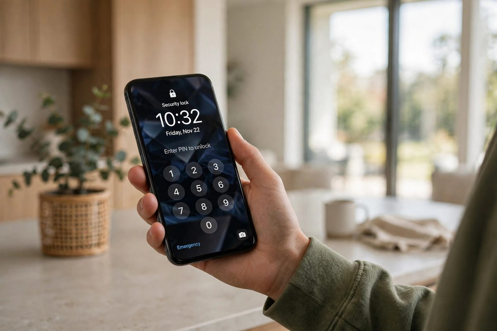

Instagram Downloader Safety: Protect Your Account and Your Phone
Stay safe with Instagram downloaders: spot scams, protect your password, and avoid account bans.
Instagram downloader apps and websites are among the riskiest tools on the internet for account security. They often ask for your login, they show aggressive ads, and some exist only to steal accounts. This guide explains the traps, how to recognise them, and the habits that keep your account and your phone safe while you save the videos you care about.
Never share your password
The first rule is absolute: never enter your Instagram password on a third-party downloader site or app. A public video does not need your login to be fetched, so any tool that asks for it is either unnecessary or malicious. The same applies to sites that ask you to log in with Instagram to prove you are human. If you have ever entered your password on such a site, change it immediately and turn on two-factor authentication in Instagram Settings, under Accounts Centre, then Password and security.
Fake apps and subscriptions
Many downloader apps in the app stores are copycats that charge a weekly subscription, show ads that cover the screen, or stop working after a few days. Check the reviews, the developer name, and the last update date before installing anything. If an app asks for permission to access your contacts, your photos, or your notifications, ask why a downloader needs that access. The answer is usually that it does not, and the permission is being used for advertising or data collection.
Account bans and blocks
Instagram detects automated access and unauthorised apps, and it can respond with a temporary block, a demand to change your password, or a permanent ban. Business accounts are especially at risk, because a ban can cut off customers and income. The safest approach is to use only the official app and its built-in features. If Instagram ever asks you to verify your identity, do it in the official app, never through a link in a message or an email, because phishing messages that imitate Instagram are common.
Safe habits
Use a unique password for Instagram and turn on two-factor authentication with an authenticator app. Keep the app updated, because updates include security fixes. Do not click links in messages that promise free followers or a verified badge. If a downloader site opens pop-ups, close the tab rather than clicking inside them. And keep a backup of your own photos and videos outside Instagram, so that even if your account has a problem, your content is safe.
Turn on two-factor authentication
Two-factor authentication is the single most effective protection for an Instagram account, and it takes two minutes to set up. Go to Settings, then Accounts Centre, then Password and security, and turn on two-factor authentication with an authenticator app, which is more secure than text messages. Once it is on, anyone who steals your password still cannot log in without the code from your phone. Save the backup codes Instagram gives you in a safe place, such as a password manager, because you will need them if you lose your phone. Do not share the codes with anyone, including someone who claims to be Instagram support, because Instagram will never ask for them. If you do nothing else in this guide, do this: a strong password plus two-factor authentication stops almost every account theft.
Frequently Asked Questions
Should I ever enter my Instagram password on a downloader site?
No, never. A legitimate tool does not need your password to fetch a public video.
Can a downloader app get my account banned?
Yes. Apps that log in to your account or automate actions break Instagram's terms and can trigger a ban.
What is the safest way to save a video?
Use Instagram's own Save feature and the creator-approved download option. Both are part of the app.